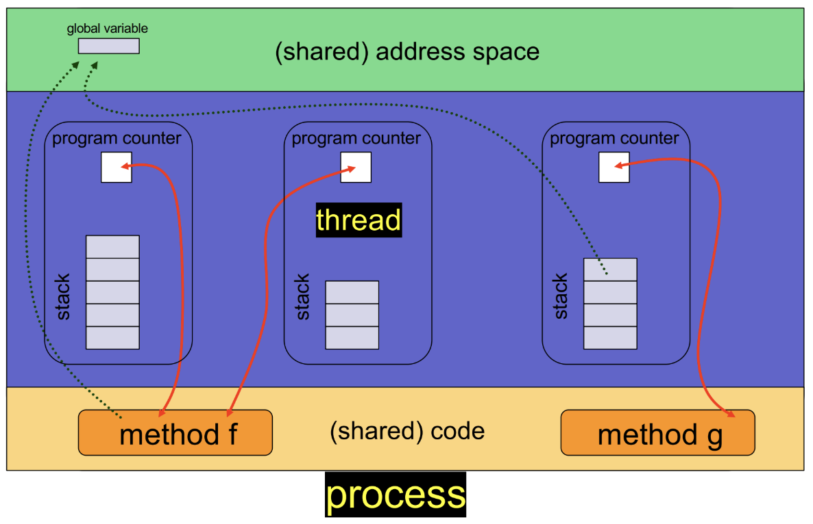
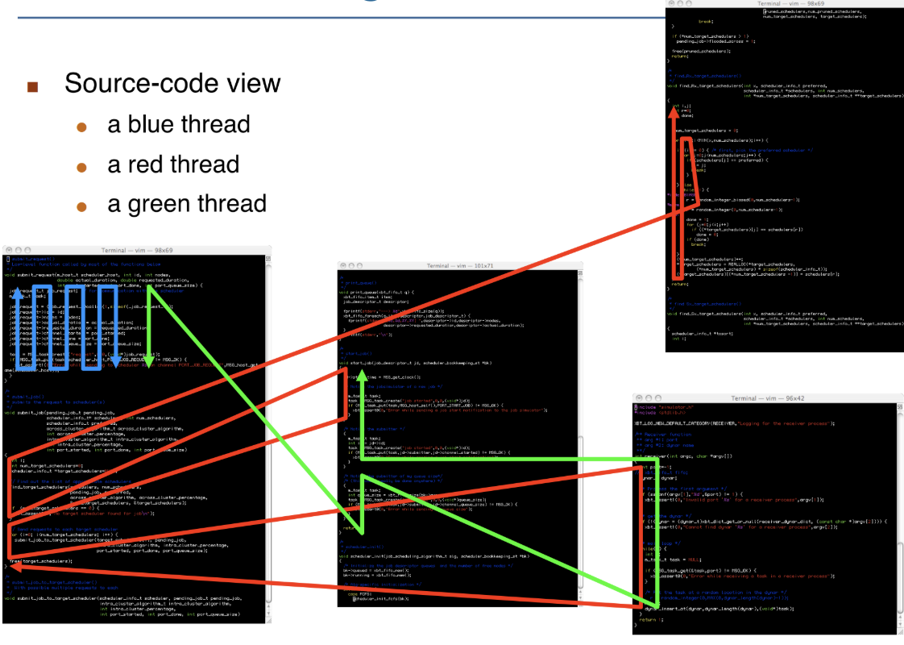
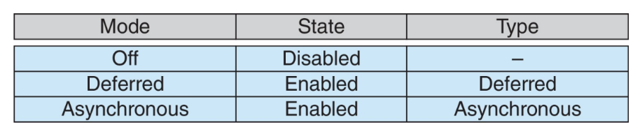
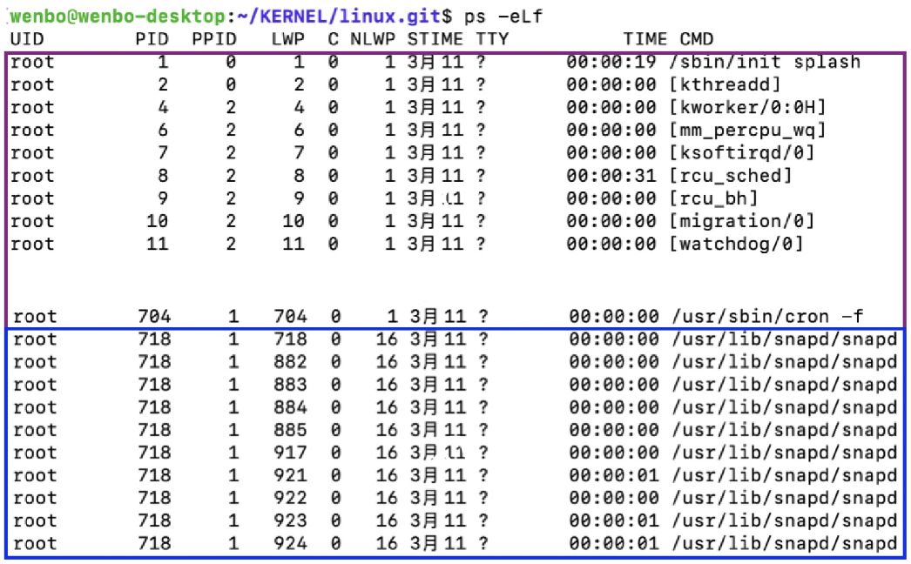

线程¶
Cause
如何让进程运行的更快？在进程内使用多个执行单元（多线程）

定义¶
- 线程：进程内的一个基本执行单位
- 独有的：每个线程都拥有自己的线程ID、程序计数器
pc、寄存器组、栈 - 共享的：它与同一进程内的其他线程共享代码段、数据段、堆（动态分配的内存）、打开的文件与信号
代码
同一个进程中的线程执行的代码可以相同，但大概率不同

- 并发性：多线程进程可以同时执行多个任务
优缺点¶
- 优点
- 经济性
- 创建线程成本低廉（相比于进程）：代码、数据和堆已经存在于内存中，只需要创建一个栈空间
- 线程间上下文切换成本低廉（相比于进程）：不需要刷新缓存
- 资源共享
- 线程共享内存：进程可能需要使用较复杂的IPC，但是进程不需要
- 在同一地址空间内进行并发活动的能力非常强大（但也充满风险）
- 响应性：一个包含并发活动的程序具有更好的响应性
- 当一个线程因等待某个事件而被阻塞时，另一个线程可以继续执行其他任务
- e.g. 在客户端-服务器架构的实现中，可以创建一个新线程来响应客户端请求
- 可扩展性
- 同时运行多个“线程”可以更有效地利用机器资源
- e.g. 在多核机器上
Notice
进程同样具有后两个特性，但线程在资源共享和经济性方面更具优势
- 缺点
-
线程间的隔离性弱：如果一个线程失败（e.g. 段错误），那么整个进程就会失败，从而导致整个程序崩溃
Info
- 线程无法受益于内存保护：使用线程进行并发编程很困难，但对于使用进程+共享内存段的情况也是如此
- 这催生了基于进程的并发模型 e.g. 谷歌 Chrome 浏览器
-
线程可能比进程更受内存限制：原因在于操作系统对单个进程地址空间大小的限制（在64位架构上这已不再是问题）
多线程挑战
- 处理数据依赖与同步问题
- 在线程间划分任务活动
- 平衡各线程间的负载
- 在线程间拆分数据
- 测试与调试
分类¶
- 分类
- User-thread：内核不知道该线程，完全在用户空间运行
- Kernel-thread：内核知道该线程，运行在用户空间或内核空间
- 对应关系
- Many-to-one Model：多个用户线程对应一个内核线程
- 优点：多线程效率高、开销低（无需向内核发起系统调用）
- 缺点：
- 无法利用多核架构的优势
- 如果一个线程阻塞，其他所有线程也会被阻塞
- One-to-One Model：一个用户线程对应一个内核线程
- 优点：消除了Many-to-one Model的两个缺点，线程管理变简单
- 缺点：创建新线程需要内核参与工作
- e.g.：Linux、Windows、Solaris 9 及更高版本
- Many-to-Many Model：多个用户线程对应多个内核线程（折中）
- 如果某个用户线程被阻塞，内核可以创建新的内核线程来避免阻塞所有用户线程
- 缺点：太复杂
- Two-Level Model：可以选择Many-to-Many或者One-to-One（太复杂）
线程库¶
- 线程库为用户提供了在其程序中创建线程的方式
- 类型
C/C++：pthreads和Win32线程：由内核实现OpenMP：构建于pthreads之上，用于在"简单"情况下方便地进行多线程编程
Java：Java线程：由JVM实现，JVM依赖于内核实现的线程
pthreads
- 是规范，不是实现（API 规定了线程库的行为，具体实现由库的开发者决定）
- e.g. 常见于
UNIX操作系统（Linux和Mac OS X）
示例代码
Win32
示例代码
OpenMP
- 通过识别并行区域（即可并行运行的代码块）来实现并行化
#pragma omp parallel：创建与核心数量相同的线程
示例代码
| C | |
|---|---|
Java
- 便利性：可以避免所有内存管理的烦恼
- 创建方式：
- 继承
Thread类 - 实现
Runnable接口
- 继承
示例代码
线程相关问题¶
fork()和exec()系统调用
- 调用可能性
- 创建一个仅包含一个线程的新进程（该线程是调用
fork()的线程的副本） - 创建一个包含原进程所有线程的新进程（复制所有线程，包括调用
fork()的线程）
- 创建一个仅包含一个线程的新进程（该线程是调用
- 在 Linux 中采用上述第一种选项：如果在
fork()之后调用exec()，所有线程都会被“清除”
- 信号处理
- 有多种选项
- 将信号传递给信号所适用的线程
- 将信号传递给进程中的每个线程
- 将信号传递给进程中的某些线程
- 指定一个特定线程接收所有信号
- 在大多数 UNIX 版本中，线程可以指定它接受哪些信号以及不接受哪些信号
- 在 Linux 系统中，处理线程与信号的关系较为复杂
- 线程安全取消
- 允许一个线程直接终止另一个线程
- 实现方式
- 异步取消：一个线程立即终止另一个线程
- 延迟取消：线程定期检查是否应当终止
-
调用线程取消只是发出取消请求，但实际的取消操作取决于目标线程的状态
- 如果线程禁用（关闭）了取消功能，取消请求将保持挂起状态，直到线程启用该功能
- 默认取消类型为延迟取消 e.g.
pthread_testcancel()
实际的取消操作

创建与取消线程的 Pthread 代码
缺点
- 异步取消
- 如果线程正在执行“重要操作”，异步取消可能导致状态不一致或引发同步问题
- e.g. 一个线程正在写变量，值还没有同步到内存或者
cache，这个bug很难被复现
- 延迟取消：由于需要设置多个取消点，代码会变得繁琐
- 在
Java中，Thread.stop()方法已被弃用，因此必须使用延迟取消方式
- 线程调度
- PCS：线程只在同一进程内竞争 CPU，调度由用户级线程库控制
- SCS：线程在整个系统中竞争 CPU，调度由操作系统内核控制
实现示例 Linux¶
- 在
Linux中，线程也被称为轻量级进程（Lightweight Process，LWP） clone()系统调用
- 用途：创建一个线程或进程
- 新创建的线程/进程与其父进程共享执行上下文
pthread库使用clone()来实现线程
参数
| 标志（flag） | 含义（meaning） |
|---|---|
| CLONE_FS | 共享文件系统信息 |
| CLONE_VM | 共享同一块内存空间（地址空间） |
| CLONE_SIGHAND | 共享信号处理函数 |
| CLONE_FILES | 共享已打开的文件集合（文件描述符表） |
- 数据结构
- TCB用来存储线程的信息
- Linux并不区分PCB和TCB，都是用
task_struct来表示
- 单线程进程 VS 多线程进程

ps -elf- 如果
PID和LWP相同，说明这个进程只有这一个线程 - 如果不相同，说明进程有多个线程，此时进程的
PID是第一个线程的LWP
- 用户线程到内核线程的映射
- 同一个
task_struct（PCB）意味着是同一个线程- 一个用户线程映射到一个内核线程
- 但实际上，它们是同一个线程
- 执行方式
- 可以在用户空间执行：用户代码，用户空间栈
- 可以在内核空间执行
- e.g. 调用系统调用
- 执行流程切换到内核，执行内核代码（用户线程对应的内核线程），使用内核空间栈